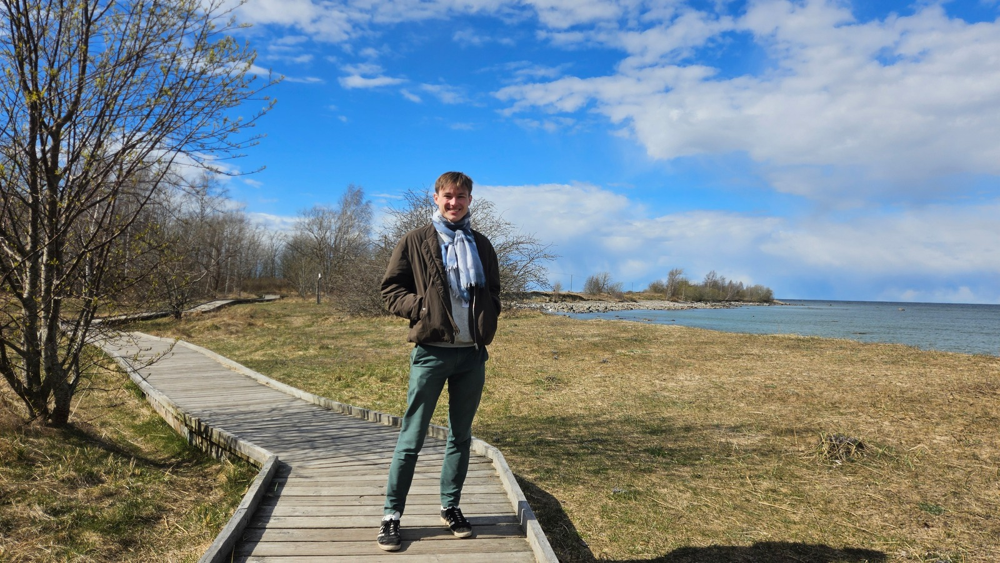

Vincent's research website

About me
I am Vincent Moreau [vɛ̃sɑ̃ moʁo], a postdoctoral researcher in computer science working with Paweł Sobociński in the Compositional Systems and Methods Group at the Tallinn University of Technology, in close relation to the Logic and Semantics Group led by Tarmo Uustalu.
My office is ICT 225, and my email address is vincent.moreau@taltech.ee.
I am interested in the interface between mathematics and computer science. Here are a few topics I work on, and strive to connect together and understand from a categorical viewpoint:
- Higher-order automata theory and model checking
- The syntax and semantics of λ-calculi and type theories
- Profinite spaces, Stone-type dualities, and codensity monads
- Implicit automata, regular functions, and transducers
- Linear logic, quantitative semantics, and the Taylor expansion of programs
- Algebraic theories, universal algebra, and effects
- Synthetic probability theory and Markov categories
- Higher structures and homotopical algebra
- Formal category theory and double categorical structures
- Finite model theory and logical games
I will happily supervise internships — don't hesitate to email me if any of these topics interest you!
My Mastodon is @vimo, and my ORCID number is 0009-0005-0638-1363.
I got my engineering degree from Télécom Paris, and my PhD from Université Paris Cité.
Research
Here are my papers, see also my DBLP page:
- A hyperdoctrinal concurrency theorem for conditional double-pushout rewriting (HAL), with Nicolas Behr, Tom Hirschowitz, and Ambroise Lafont, preprint
- Profinite trees, through Lawvere theories and the lambda-calculus (arXiv), preprint
- A cartesian closed fibration of higher-order regular languages (arXiv, LIPIcs), with Paul-André Melliès, published at LiCS 2026
- Syntactically and semantically regular languages of lambda-terms coincide through logical relations (arXiv, HAL, LIPIcs) with Tito Nguyễn, published at CSL 2024
- Profinite lambda-terms and parametricity (arXiv, entics), with Sam van Gool and Paul-André Melliès, published at MFPS XXXIX
Here are a few recent slides I presented about my research:
- A Cartesian Closed Fibration of Higher-Order Recognizable Languages, with Paul-André Melliès
- Semi-quantitative semantics, with Tito Nguyễn
I did my PhD at IRIF in Paris, under the supervision of Paul-André Melliès and Sam van Gool. I defended my PhD thesis in July 2025. Here is my manuscript:
More information on my PhD, as well as older notes and talks, can be found on my previous website.
Community
I was invited to take part in the PhD student panel of the FLoC 2026 Mentoring Workshop about beginning a career in academia, which took place on July 19, 2026.
I was in the examining committee for Philipp Joram's PhD thesis, defended in June 2026.
I wrote reviews for the following events: MFCS 2026, MFPS XLII, QPL 2026, LiCS 2026, FoSSaCS 2026, CSL 2026, PPDP 2024.
I wrote grants proposals to the Estonian Centre of Excellence in Artificial Intelligence and the FSMP.
I co-organized the Lambda Pros day, to bring together researchers interested in the growing connection between automata and λ-calculus. I also co-organized a number of reading groups, in particular about synthetic probability theory in Tallinn, and about homotopy theory and type theory, topos theory, and the Taylor expansion of λ-terms in Paris.